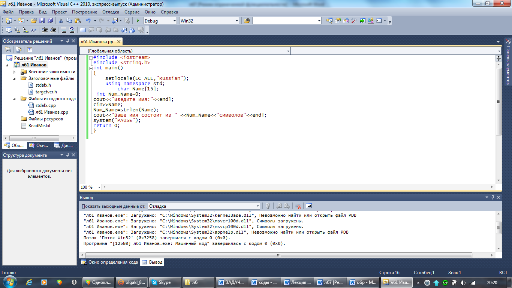

Лабораторная работа № 5
Разработка программ с применением одномерных массивов
Цель работы: Получение навыков работы по созданию программ с использованием массивов.
Материальное обеспечение: Компьютерное оборудование и программное обеспечение.
Основные понятия и определения
Массив – это специальная структура данных, позволяющая хранить несколько значений одного и того же типа. Для объявления массива необходимо указать имя, тип значений, хранящихся в массиве, а также количество значений (называемых элементами массива). Структура массива имеет следующий вид:
тип имя переменной [n], где n - количество элементов в массиве.
Чтобы обратиться к значению, хранящемуся внутри массива, необходимо указать имя массива и номер элемента. Элементы массива автоматически нумеруются, причем нумерация всегда начинается с нуля. Таким образом, элементы в массиве нумеруются от 0 до n-1. Число, определяющее, сколько элементов может быть в массиве, называется размерностью. Массивы, как и переменные, должны быть объявлены перед использованием. Массивы могут быть двух типов: одномерные, многомерные. Для представления строк в программах на языке С++ используют массивы переменных типа char. Для работы со строками имеются множество стандартных функций, которые определены в заголовочном файле string.h
Объявление переменной массива.
При объявлении массива программы могут использовать оператор присваивания для инициализации элементов массива. Подобно переменным, массив должен иметь тип и уникальное имя, а также необходимо указать количество значений, которые массив будет хранить. Все сохраняемые в массиве значения должны быть одного и того же типа. Другими словами, программа не может поместить значения типа float, char и long в один и тот же массив.
Обращение к элементам массива
Для обращения к определенным значениям, хранящимся в массиве, необходимо использовать значение индекса, которое указывает на требуемый элемент.
Например, для обращения к первому элементу массива вам необходимо использовать значение индекса 0. Для обращения ко второму элементу используйте индекс 1 т.е индекс последнего элемента на единицу меньше размера массива.
Этапы выполнения программы включают следующие пункты.
1.Определяете, с какими именно библиотеками (заголовочными файлами) вы будете работать. В данном случае с библиотекой <iostream>. Данная библиотека обеспечивает работу потока cout.
2.Написание главной функции программы. Функция main - главная функция программы.
3.Начало тела функции. Открывается фигурная скобка.
4.Объявление массива и переменных, которые будут использоваться в данной программе.
5.Написание операторов программы и выражений. В данном случае используем оператор cout, чтобы вывести сообщение на экран. Оператор cin, чтобы осуществить ввод данных с клавиатуры.
6.Конец функции. Закрывается фигурная скобка.
Методический пример:
Написать программу, которая определяет, сколько символов в вашем имени.

Результат программы:
Введите имя:
Айнура
Ваше имя состоит из 6 символов
Варианты заданий:
1.Написать программу, которая определяет, сколько символов в названии города.
2.Написать программу, которая определяет, сколько символов в вашей фамилии.
3.Написать программу, которая определяет, сколько символов в вашем отчестве.
4.Написать программу, которая определяет, сколько символов в названии улицы.
5.Написать программу, которая определяет, сколько символов в названии страны.
6.Написать программу, которая определяет, сколько символов в названии дня недели.
7.Написать программу, которая определяет, сколько символов в названии месяца.
8.Написать программу, которая определяет, сколько символов в названии вашей специальности.
9.Написать программу, которая определяет, сколько символов в названии книги.
10.Написать программу, которая определяет, сколько символов в вашем адресе.
11.Написать программу, которая определяет, сколько символов в названии журнала.
12.Написать программу, которая определяет, сколько символов в названии марки автомобиля.
Порядок выполения работы:
1.Изучить теоретические сведения по данной лабораторной работе.
2.Составить программу для заданного варианта.
3.Записать программу на языке Visual C++.
4.Отладить программу.
5.Продемонстрировать работу программы на ПК для заданного варианта.
Содержание отчета:
1.Тема и цель работы.
2.Вариант задания.
3.Листинг и результат программы.
4.Контрольные вопросы.
Контрольные вопросы:
1.Что такое массив? Что необходимо указать для объявления массива?
2.Как нумеруются элементы массива? Что такое размерность?
3.Можно ли в один массив поместить значения разных типов?
Литература:
1.Хортон А. Visual 2010: полный курс.:Пер. с анг.-М.:ООО «И.Д.Вильямс», 2011г , 1216 с.: ил.
2.Пахомов Б.И. С/C++ и MS Visual C++ 2010 для начинающих. – СПб.:БХВ-Петербург, 2011.-736 с.:ил.
3.Зиборов В. В. MS Visual C++ 2010 в среде.NET. Библиотека программиста. — СПб.: Питер,
2012. — 320 с.: ил.